Benchmarking normalization, aggregation and models using the Ionstar Dataset
FGCZ - (Draft)
01 March, 2021
Source:vignettes/BenchmarkingIonstarData.Rmd
BenchmarkingIonstarData.RmdPlease download and install the prolfquaData package from github
rm(list = ls())
library(conflicted)
library(prolfqua)
library(tidyverse)
library(dplyr)
conflict_prefer("filter", "dplyr")We start by loading the IonStar dataset and the annotation from the prolfquaData package. The method add_annotation adds the annotation to the data.
datadir <- file.path(find.package("prolfquaData") , "quantdata")
inputMQfile <- file.path(datadir, "MaxQuant_Ionstar2018_PXD003881.zip")
inputAnnotation <- file.path(datadir, "annotation_Ionstar2018_PXD003881.xlsx")
mqdata <- tidyMQ_Peptides_Config(inputMQfile)
annotation <- readxl::read_xlsx(inputAnnotation)
res <- add_annotation(
mqdata$data,
annotation,
fileName = "raw.file"
)
mqdata$config$table$factors[["dilution."]] = "sample"
mqdata$config$table$factors[["run_Id"]] = "run_ID"
mqdata$config$table$factorDepth <- 1
mqdata$data <- setup_analysis(res, mqdata$config)
datafilt <- prolfqua::filter_proteins_by_peptide_count(mqdata$data, mqdata$config)$dataNormalize data using HUMAN proteins only
lfqdata <- LFQData$new(datafilt, mqdata$config)
tr <- lfqdata$get_Transformer()
subset_h <- lfqdata$get_copy()
subset_h$data <- subset_h$data %>% filter(grepl("HUMAN", protein_Id))
lfqdataNormalized <- tr$log2_robscale_subset(lfqsubset = subset_h)The figures below show the intensity distribution before and after normalization.
before <- lfqdata$get_Plotter()
before$intensity_distribution_density()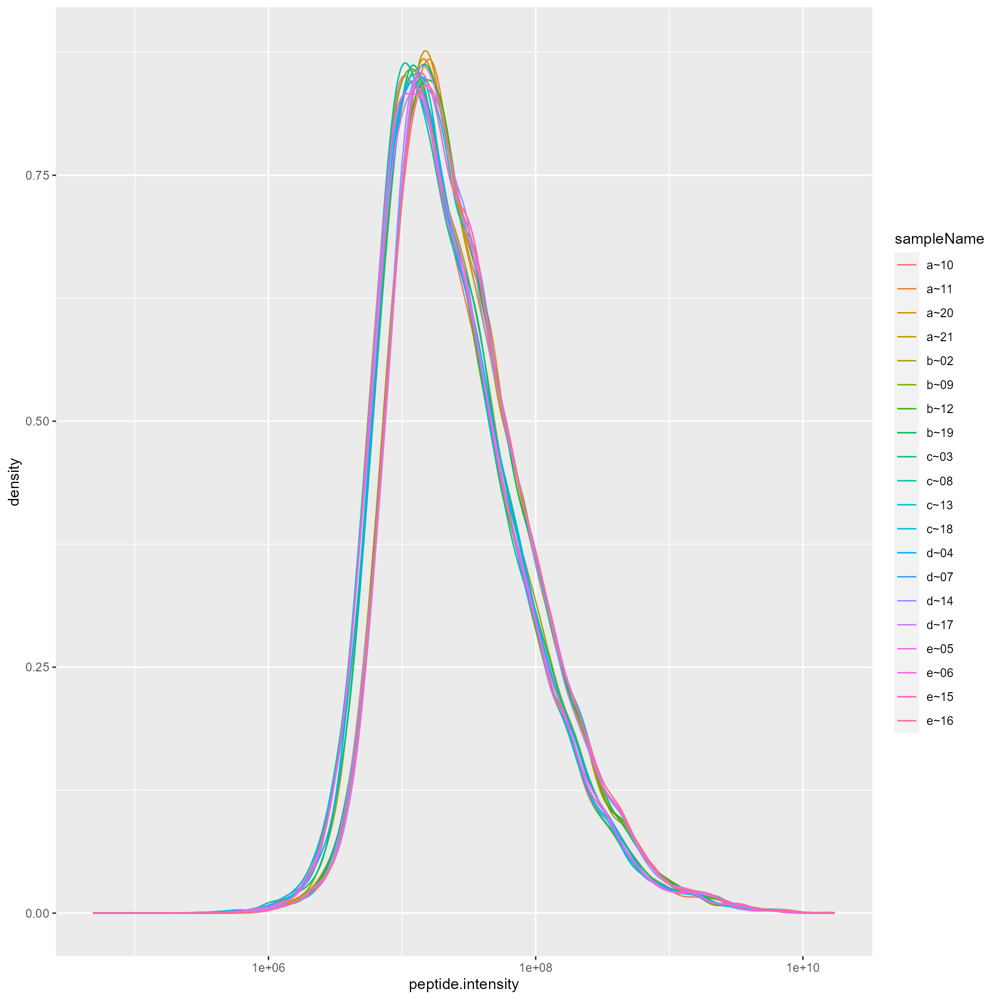
after <- lfqdataNormalized$get_Plotter()
after$intensity_distribution_density()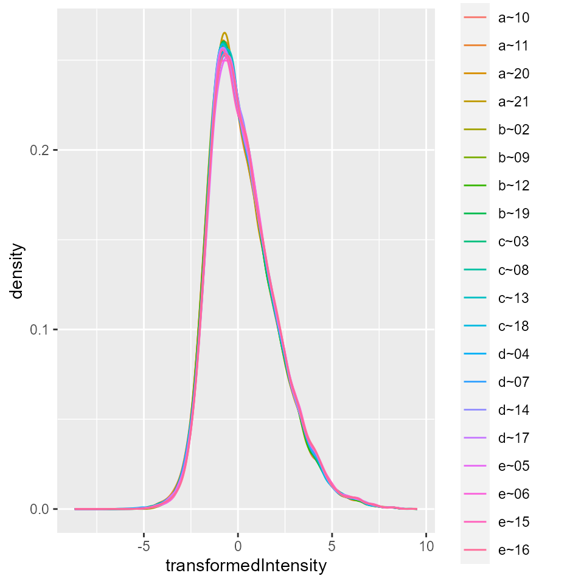
Create a sample of N proteins to speed up computations of models and contrasts.
N <- 200
set.seed(2020)
hk <- mqdata$config$table$hkeysDepth()
protein_Ids <- mqdata$data %>%
select(all_of(hk)) %>%
distinct() %>%
sample_n(size = N)
lfqNormSubset <- lfqdataNormalized$get_copy()
lfqNormSubset$data <- inner_join(protein_Ids, lfqNormSubset$data)
mqdataSubset <- mqdata
mqdataSubset$data <- inner_join(protein_Ids, mqdata$data)Infer Protein intensities using Tukeys Median Polish
We will be using the LFQDataAggregator class. To estimate protein intensities using Tukey’s median polish we need to use normalized data. The figure below shows the the protein estimates (dashed line) and the peptide intensities.
lfqAggMedpol <- LFQDataAggregator$new(lfqNormSubset, "protein")
lfqAggMedpol$medpolish()
xx <- lfqAggMedpol$plot()
xx$plots[[1]]
We can also estimate the protein intensities using the top N most abundant peptides. In this case we are using the untransformed protein intensities. The figure below shows the estimated protein intensities.
lfqAggregator <- LFQDataAggregator$new(LFQData$new(mqdataSubset$data, mqdataSubset$config), "protein_topN")
lfqAggregator$mean_topN()
topN <- lfqAggregator$plot()
topN$plots[[1]]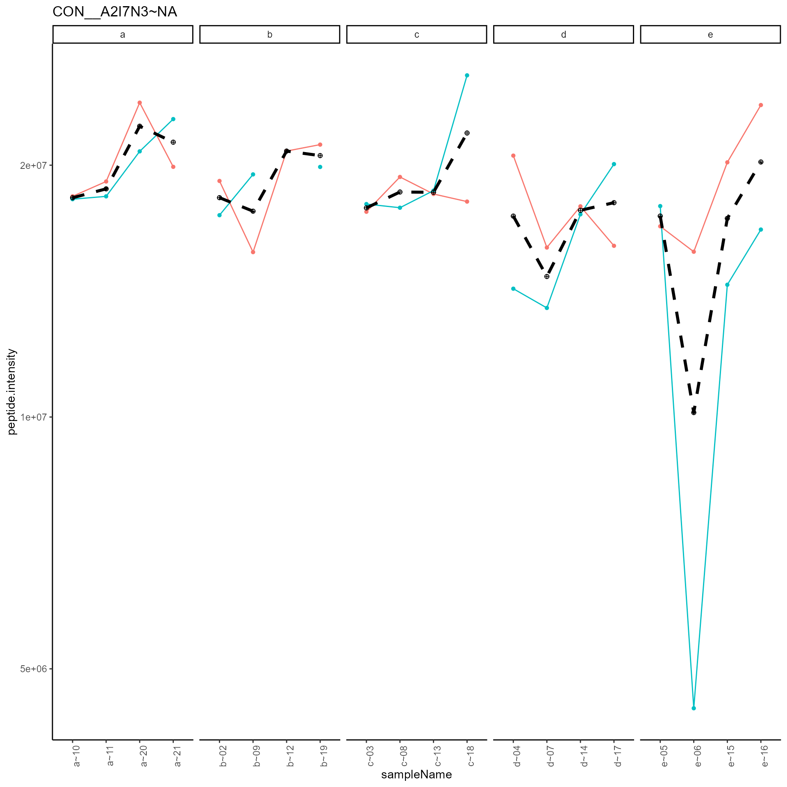
Fitting a linear model to the protein intensities
To fit the linear models we will be using the protein intensities estimated using the Tukeys median polish.
DEBUG <- FALSE
Contrasts <- c(
"dilution_(9/3)_3" = "dilution.e - dilution.a",
"dilution_(9/4.5)_2" = "dilution.e - dilution.b",
"dilution_(9/6)_1.5" = "dilution.e - dilution.c",
"dilution_(9/7.5)_1.2" = "dilution.e - dilution.d",
"dilution_(7.5/3)_2.5" = "dilution.d - dilution.a",
"dilution_(7.5/4.5)_1.6(6)" = "dilution.d - dilution.b",
"dilution_(7.5/6)_1.25" = "dilution.d - dilution.c",
"dilution_(6/3)_2" = "dilution.c - dilution.a",
"dilution_(6/4.5)_1.3(3)" = "dilution.c - dilution.b",
"dilution_(4.5/3)_1.5" = "dilution.b - dilution.a"
)
tt <- Reduce(rbind, strsplit(names(Contrasts),split = "_"))
tt <- data.frame(tt)[,2:3]
colnames(tt) <- c("ratio" , "expected fold-change")
tt <- tibble::add_column(tt, contrast = Contrasts, .before = 1)
prolfqua::table_facade(tt, caption = "All possible Contrasts given 5 E. coli dilutions of the Ionstar Dataset")| contrast | ratio | expected fold-change | |
|---|---|---|---|
| init | dilution.e - dilution.a | (9/3) | 3 |
| X | dilution.e - dilution.b | (9/4.5) | 2 |
| X.1 | dilution.e - dilution.c | (9/6) | 1.5 |
| X.2 | dilution.e - dilution.d | (9/7.5) | 1.2 |
| X.3 | dilution.d - dilution.a | (7.5/3) | 2.5 |
| X.4 | dilution.d - dilution.b | (7.5/4.5) | 1.6(6) |
| X.5 | dilution.d - dilution.c | (7.5/6) | 1.25 |
| X.6 | dilution.c - dilution.a | (6/3) | 2 |
| X.7 | dilution.c - dilution.b | (6/4.5) | 1.3(3) |
| X.8 | dilution.b - dilution.a | (4.5/3) | 1.5 |
relevantContrasts <- c("dilution_(9/7.5)_1.2",
"dilution_(7.5/6)_1.25",
"dilution_(6/4.5)_1.3(3)",
"dilution_(4.5/3)_1.5" )
tt <- Reduce(rbind, strsplit(relevantContrasts,split = "_"))
tt <- data.frame(tt)[,2:3]
colnames(tt) <- c("ratio" , "expected fold-change")
tt <- tibble::add_column(tt, contrast = Contrasts[names(Contrasts) %in% relevantContrasts], .before = 1)
prolfqua::table_facade(tt, caption = "Contrasts used for benchmark.")| contrast | ratio | expected fold-change | |
|---|---|---|---|
| init | dilution.e - dilution.d | (9/7.5) | 1.2 |
| X | dilution.d - dilution.c | (7.5/6) | 1.25 |
| X.1 | dilution.c - dilution.b | (6/4.5) | 1.3(3) |
| X.2 | dilution.b - dilution.a | (4.5/3) | 1.5 |
relevantContrasts <- Contrasts[names(Contrasts) %in% relevantContrasts]
protLFQ <- lfqAggMedpol$lfq_agg
lmmodel <- "~ dilution."
lmmodel <- paste0(protLFQ$config$table$getWorkIntensity() , lmmodel)
modelFunction <- make_custom_model_lm( lmmodel, model_name = "Model")
mod <- prolfqua::build_model(protLFQ$data, modelFunction)
mod$coef_pairs()$plot
contr <- prolfqua::ContrastsModerated$new(mod, relevantContrasts)
contrdf <- contr$get_contrasts()
cp <- contr$get_Plotter()
cp$volcano()## $FDR.moderated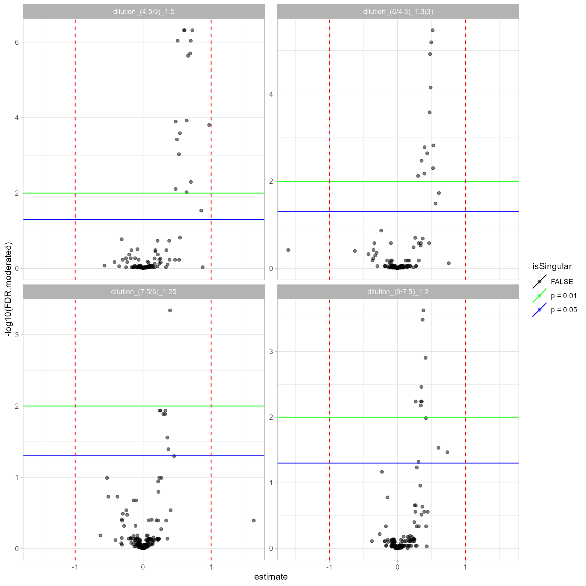
Benchmarking
ttd <- prolfqua::ionstar_bench_preprocess(contrdf)
medpol_benchmark <- make_benchmark(ttd$data,
model_description = "med. polish and lm. density",
model_name = "prot_med_lm",
FDRvsFDP = list(list(sc = "FDR", desc = FALSE),
list(sc = "FDR.moderated", desc = FALSE))
)
medpol_benchmark$data()## # A tibble: 652 x 22
## contrast protein_Id c1 c2 c1_name c2_name sigma df estimate
## <chr> <chr> <dbl> <dbl> <chr> <chr> <dbl> <int> <dbl>
## 1 dilutio~ sp|P11498~ -1.59 -1.57 diluti~ diluti~ 0.228 15 -0.0209
## 2 dilutio~ sp|P07395~ -2.28 -2.54 diluti~ diluti~ 0.166 10 0.260
## 3 dilutio~ sp|Q9NZU5~ -0.247 -0.106 diluti~ diluti~ 0.340 14 -0.141
## 4 dilutio~ sp|O43615~ -0.810 -0.808 diluti~ diluti~ 0.0566 15 -0.00209
## 5 dilutio~ sp|P0AG51~ -0.125 -0.668 diluti~ diluti~ 0.304 15 0.543
## 6 dilutio~ sp|Q6UWU4~ -2.65 -3.53 diluti~ diluti~ 1.32 2 0.877
## 7 dilutio~ sp|P62829~ 2.40 2.32 diluti~ diluti~ 0.113 15 0.0865
## 8 dilutio~ sp|Q13185~ 1.12 1.16 diluti~ diluti~ 0.0958 15 -0.0391
## 9 dilutio~ sp|P45973~ 0.111 0.238 diluti~ diluti~ 0.275 15 -0.127
## 10 dilutio~ sp|Q6GMV3~ -0.875 -0.822 diluti~ diluti~ 0.141 15 -0.0528
## # ... with 642 more rows, and 13 more variables: std.error <dbl>,
## # statistic <dbl>, p.value <dbl>, conf.low <dbl>, conf.high <dbl>,
## # isSingular <lgl>, FDR <dbl>, moderated.p.value <dbl>, FDR.moderated <dbl>,
## # species <chr>, TP <lgl>, scaled.p.value <dbl>,
## # scaled.moderated.p.value <dbl>
medpol_benchmark$plot_score_distribution()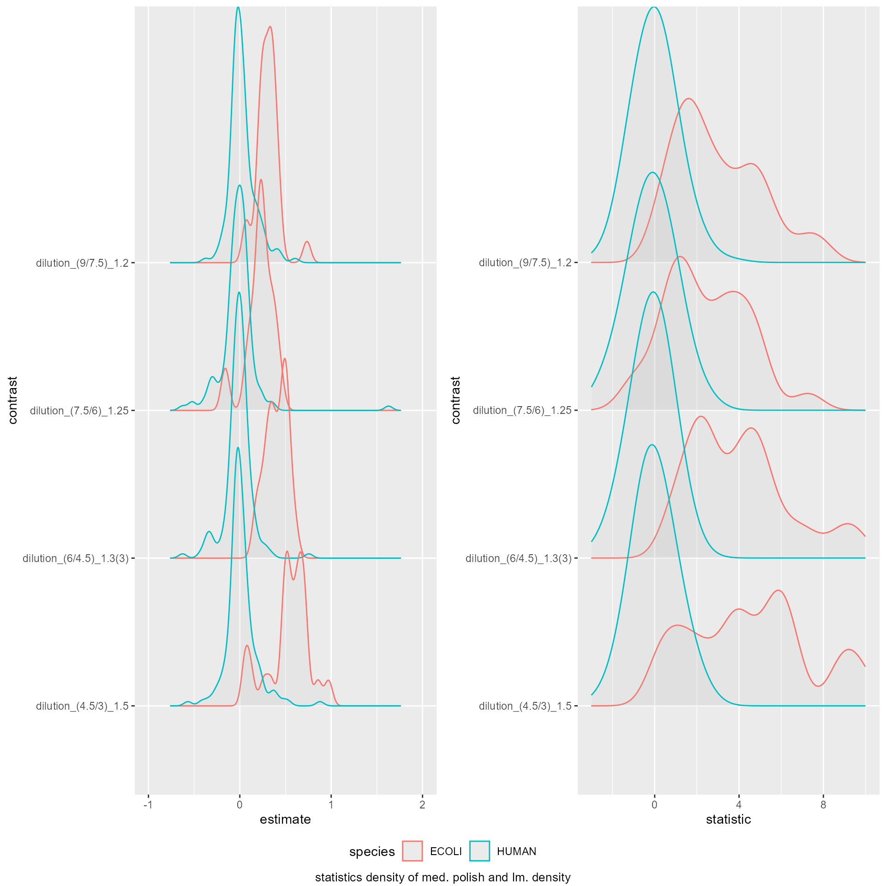
medpol_benchmark$plot_ROC()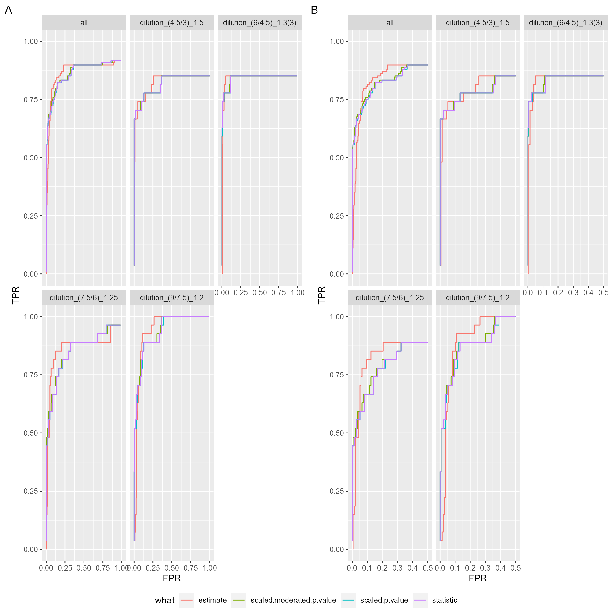
medpol_benchmark$plot_FDRvsFDP()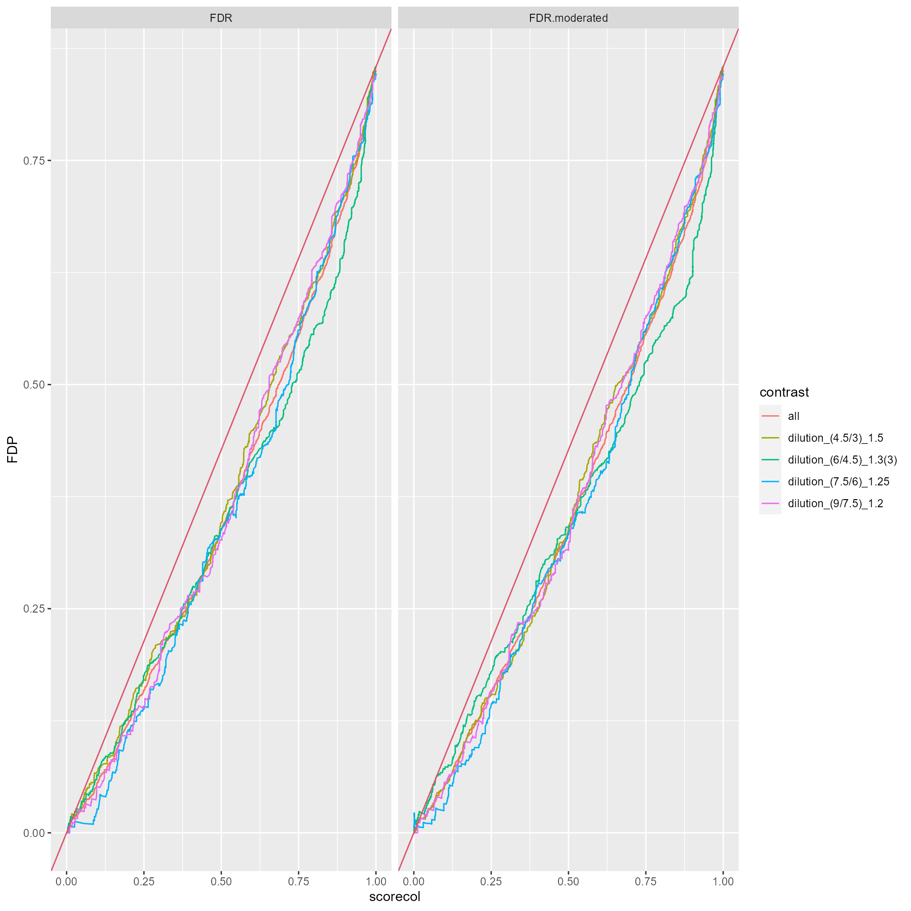
Imputation
In order to estimate fold-changes of proteins for which linear models could not be fitted because of an excess of missing measurements, the following procedure is applied: The mean intensity of a peptide over all samples in a condition is computed. For the proteins with no observation in one condition, we imputed the peptide intensities using the mean of the 10% smallest average peptide intensities determined in step one. Then the fold changes between conditions were estimated for each peptide, and the median of the peptide fold change estimates was used to provide a per protein fold change. No p-values were estimated in this case.
contrsimple <- prolfqua::ContrastsSimpleImpute$new(lfqNormSubset, relevantContrasts)
cs <- contrsimple$get_contrasts()
cs <- cs %>% rename(estimate = .data$estimate_median)
ttd <- prolfqua::ionstar_bench_preprocess(cs)
ttd$data## # A tibble: 652 x 14
## contrast protein_Id c1_name c2_name c1 c2 n estimate estimate_mad
## <chr> <chr> <chr> <chr> <dbl> <dbl> <int> <dbl> <dbl>
## 1 dilutio~ sp|E9PAV3~ diluti~ diluti~ 3.46 3.41 6 -0.0808 0.153
## 2 dilutio~ sp|O00115~ diluti~ diluti~ -1.34 -1.05 2 -0.284 0.486
## 3 dilutio~ sp|O14617~ diluti~ diluti~ -1.40 -1.44 10 0.0255 0.311
## 4 dilutio~ sp|O15127~ diluti~ diluti~ -1.10 -0.959 2 -0.140 0.254
## 5 dilutio~ sp|O15446~ diluti~ diluti~ -1.17 -1.07 5 -0.148 0.615
## 6 dilutio~ sp|O43169~ diluti~ diluti~ 0.546 1.02 7 -0.0602 0.251
## 7 dilutio~ sp|O43615~ diluti~ diluti~ -0.775 -0.650 10 -0.120 0.0636
## 8 dilutio~ sp|O43920~ diluti~ diluti~ -0.472 -0.436 2 -0.0360 0.134
## 9 dilutio~ sp|O60573~ diluti~ diluti~ -1.84 -1.68 5 -0.165 0.767
## 10 dilutio~ sp|O75886~ diluti~ diluti~ -0.287 -0.113 4 -0.105 0.0763
## # ... with 642 more rows, and 5 more variables: isSingular <lgl>,
## # statistic <dbl>, p.value <dbl>, species <chr>, TP <lgl>
medpol_benchmark <- make_benchmark(ttd$data,
model_description = "imputed data",
model_name = "pep_imputed_nonparam",
toscale = NULL,
benchmark = list(
list(sc = "estimate", desc = TRUE),
list(sc = "statistic", desc = TRUE)
),
FDRvsFDP = NULL)
medpol_benchmark$plot_score_distribution()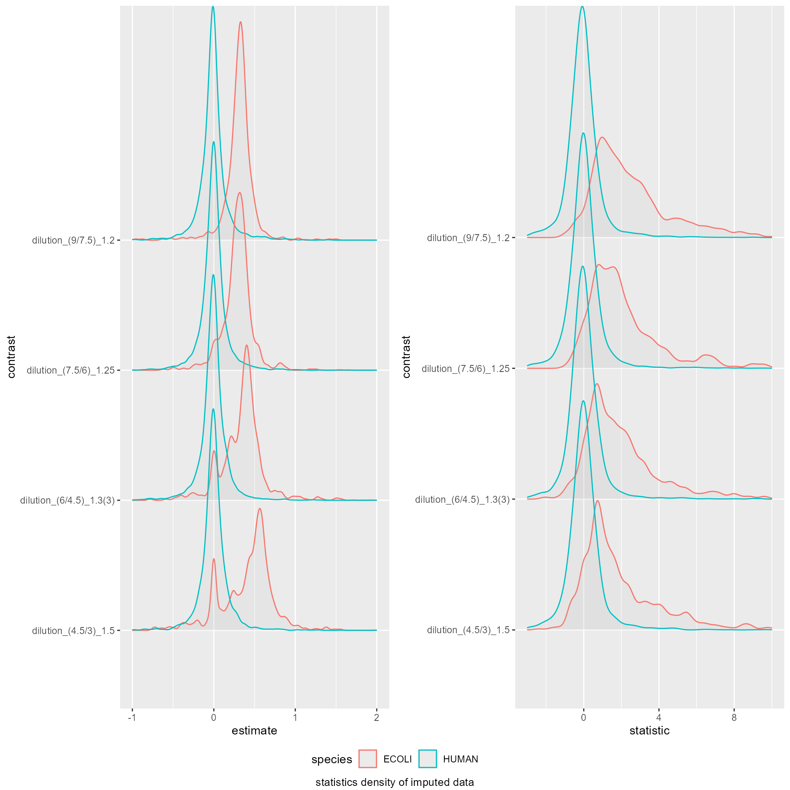
medpol_benchmark$plot_ROC()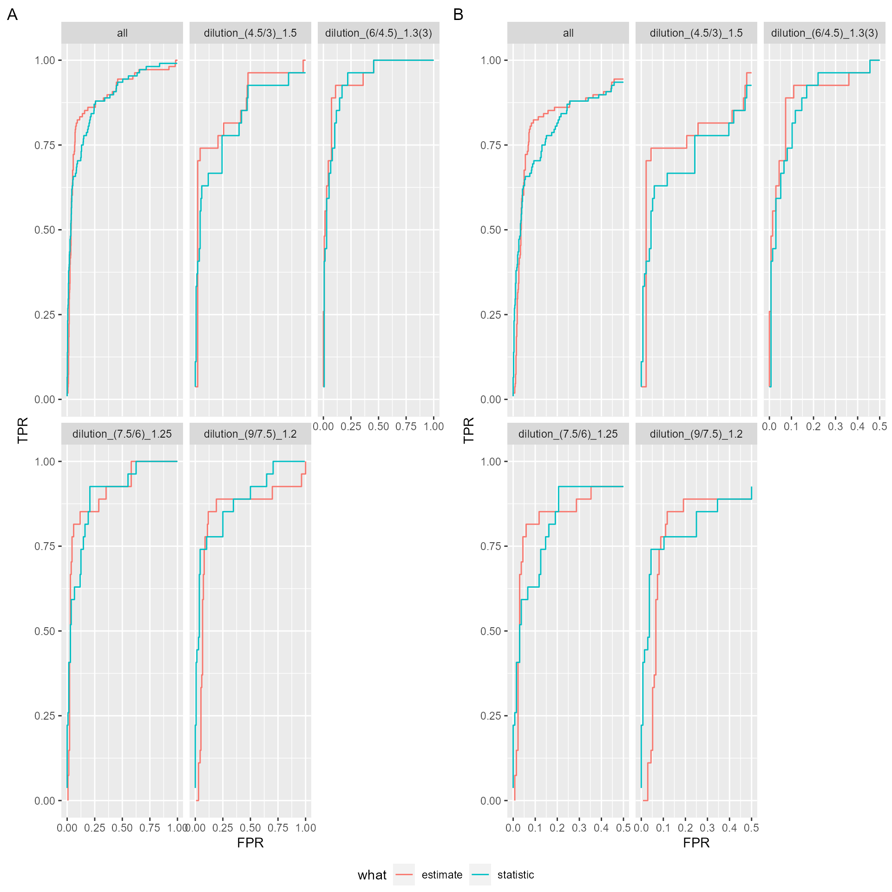
x <- medpol_benchmark$pAUC_summaries()
x$barp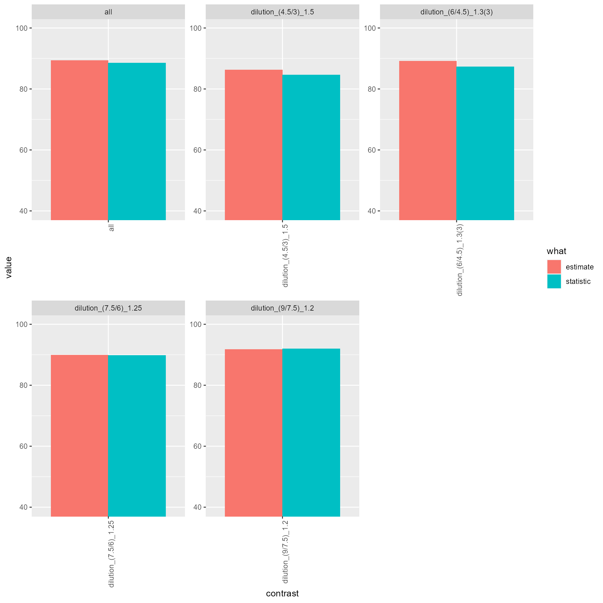
Compare fold changes for both methods
Plot scatter plots for fold changes obtained using the linear model and missing value imputation.
cs <- cs %>% select(contrast, protein_Id, est_imp = estimate )
contrdf <- contrdf %>% select(contrast, protein_Id, est_lm = estimate )
estimates_compare <- inner_join(contrdf, cs)
estimates_compare %>% ggplot(aes(x = est_lm, y = est_imp)) + geom_point() +
geom_smooth(method = 'lm', formula = y~x)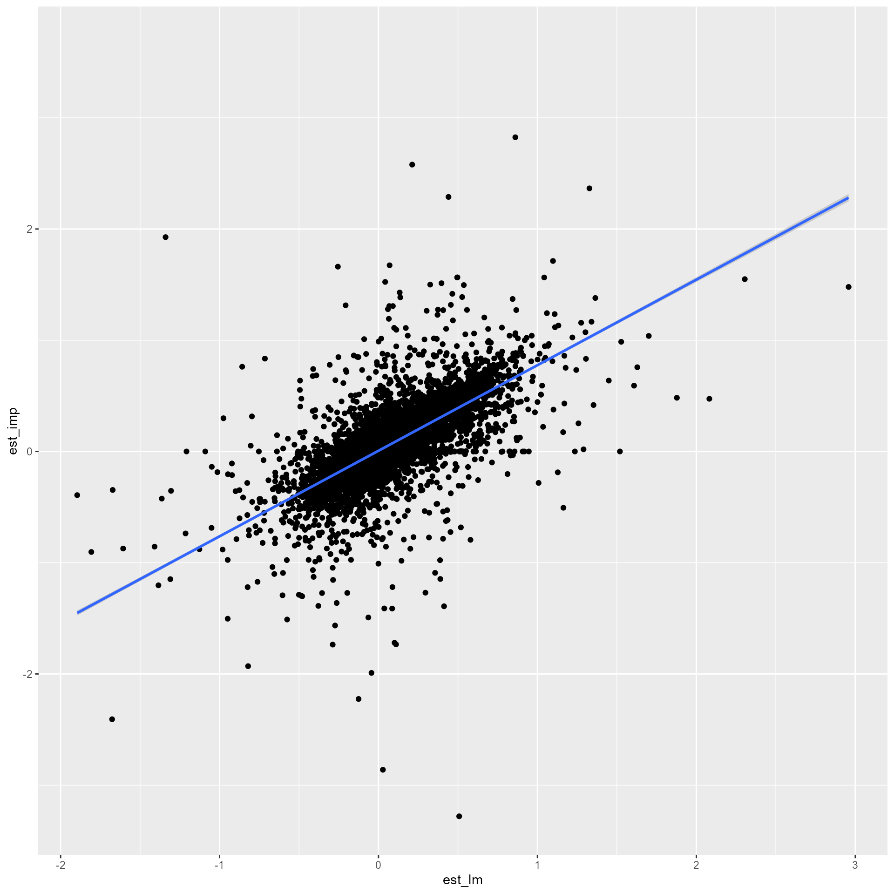